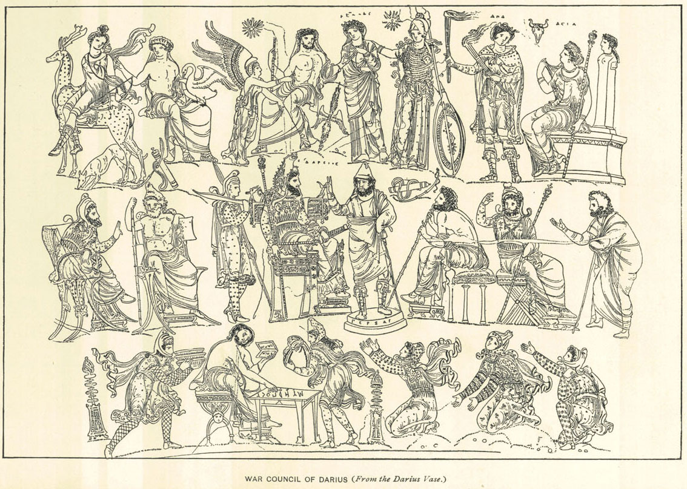

Introduction
Darius III was the last great king of ancient Persia, and the last of its prosperous Achaemenid dynasty. Even so, he failed to live up to the standards of his predecessors, and it was under him that Persia fell to Greece. Due to his lack of skills and experience, Darius was unable to manage his empire, and Darius became defined only through his failures against Alexander the Great.
Early Life
Darius was born under the name Artashata, to his father and mother, Arsames of Ostanes and Sisygambis, around 380 BCE. At the time, his family was distantly related to the current rulers, with his father being the brother of Artaxerxes III, and his mother the daughter of Artaxerxes II. Artashata only came into power due to a power play by Artaxerxes III's vizier, Bagoas, who had him and all his sons but Arses assassinated. Bagoas had hoped to use Arses as a puppet to further his own agenda, but Arses refused to do the bidding of Bagoas and was promptly assassinated as well in 336 BCE. It was after Arses' death that Artashata took the throne, at the age of 44 and serving as a royal courier. Once in power, Artashata chose the name of Darius III, and followed Artaxerxes III and Arses in that he also wanted to rule independent of Bagoas' wishes. The vizier attempted to assassinate Darius as well using poison, but Darius was warned ahead of time and forced Bagoas to drink the poison himself.
Despite now being in total control of all of Persia, Darius was in a way even worse off, as he had no prior experience in managing such a large area. By the time he was in power, Persia as an empire had destabilized to the point where the majority of its satrapies were riddled with corruption, ruled by satraps that cared only for themselves and filled with citizens that wanted to break free from their government. To make matters worse, Darius had no intention of fixing the problems that festered within Persia, and he lacked the characteristics of a great leader that would've enabled him to reel in his people.
War with Alexander
Within the same year that Darius III came into power, Philip II of Macedon conquered the weak Greek states, and with their help declared war on Persia as vengeance for the destruction wrought during the Persian wars. Although Philip was assassinated before he could make any real progress in his mission, his son, Alexander the Great, took his place to finish what had been started.
Before the attack from Alexander, Darius had already dealt with another Greek attack, when the Spartans, led by their king Agesilaus, attempted to invade Asia Minor. Darius defeated the incursion by pinning the Spartan forces within the peninsula and sparked rebellions in their homelands, forcing the Spartans to deal with a two front war. Due to the strategies apparent success, Darius utilized it again for Alexander. However, this time, the tactic failed horribly. Darius was so confident in his troops and the lower satrapies to deal with the new Greek threat that he didn't even bother to be present for the battle, opting to stay in his palace at Persepolis. This decision was also supported with the fact that Darius did not expect that Alexander would even want to conquer all of Persia, let alone have the capacity to do so. Unfortunately for Darius, Alexander made quick work of the Persian forces in their first skirmish, at the Battle of Granicus.

Issus
Darius didn't begin to take Alexander seriously until over a year later at the Battle of Issus in 333 BCE. Only then did he come onto the field of battle, bringing a force more than twice the size of Alexander's. Even with such a formidable force, Alexander outclassed Darius when it came to tactics, defeating Darius yet again. The stories told by the historian Arrian claim that Darius fled the scene of the battle the second he saw his forces begin to crumble under Alexander's offense, leaving behind his chariot, weapons, and even his family. Upon realizing his folly, Darius attempted to reclaim his family and end the war by sending letters to Alexander. However, every attempt he made was met Alexander's demand that Darius recognize him as the new emperor of Persia, something Darius refused to stoop to. Thus, his battles with Alexander continued until the Macedonian took everything that was his by force.

Gaugamela
Darius and Alexander fought once more, two years after Issus, in 331 BCE, at the Battle of Gaugamela. Again, Darius had the advantage of a larger army, and even took Alexander by surprise at point in the battle, yet ultimately, Darius failed to defeat him. Even with the armies of several nearby satraps, and choosing a location of battle that suited his chariots and would prevent Alexander from having an advantage, Darius fled before the battle ended. Legends say that Darius was the first of the entire Persian force to flee, demolishing Persian morale as he left the battle. His cowardly acts at both Issus and Gaugamela, coupled with the massive Persian casualties, discouraged future soldiers from assembling for him. While Darius attempted to prepare another army at Ecbatana to try and stop Alexander again, Alexander continued to conquer Persian cities, including the major hubs at Babylon and Susa, as well as the main Persian capital of Persepolis. All the while, Darius begged Alexander to end his advances, offering the Macedonian king all of the Persian Empire west of the Euphrates. Alexander, determined to own what remained of Darius' land, refused every request and closed in Darius with every conquest.
Later Life/Death
Unable to raise an army even comparable to the forces at Issus and Gaugamela, Darius was forced to continually from Alexander's encroaching army, further weakening Persian morale. The situation deteriorated with increasing desertions, until it culminated in a coup by a satrap named Bessus and the man in charge of Darius' palace guard, Nabarzanes. The two tried to convince Darius to hand over control to Bessus until Alexander was defeated, but Darius refused to accept. Darius was even approached by a Greek mercenary named Patron, who offered to give him Greek mercenaries so that he would be safe from any attempts on his life by Bessus and Nabarzanes. However, Darius realized such a move would only decrease moral further and turned down Patron's offer. Bessus and Nabarzanes eventually captured Darius and held him hostage while commanding the Persian to continue against Alexander. However, when they realized that Alexander was about to reach them, Bessus panicked, fatally wounding Darius with a javelin and fleeing with his accomplices. Alexander found Darius dying, and became furious that he was killed, as Alexander wanted the Persian king alive. Nevertheless, Alexander had the body sent back to Persepolis, where it was given a proper royal funeral and buried in the royal tombs of his predecessors. At this time, Darius' killer Bessus gave himself the name of Artaxerxes V and the title of the King of Asia. Artaxerxes reached out to Alexander, wanting to make an alliance, but Alexander refused to work with a traitor, and hunted down Artaxerxes. After capturing the fake king, Alexander had each of his arms tied to two bent tries, which upon being released, tore Artaxerxes in two. It was at this point that all remnants of Darius' rule were eradicated, and the once glorious Persian empire was brought to its knees by a Macedonian.
Although Darius III was the last of the great Achaemenid line, and did maintain most of the systems that made Persia so prosperous, like its religious tolerance, he ultimately proved to be an ineffective and cowardly ruler. By failing to properly respond to Alexander's first excursions, and by fleeing from two of his three major battles, Darius essentially gave Alexander his empire. Through his incompetence both on the battlefield and in managing his empire, Darius lost the treasure of his ancestors to a tiny force of Greeks in only a span of a few years.